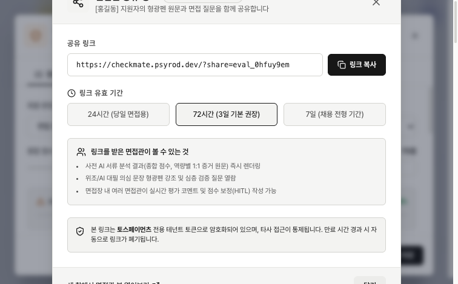

제3장. 구현 결과 및 실현 가능성
심사기준 3. 실현 가능성 (20점)3.1 실제 상용 배포 서비스 5단계 사용자 여정 (End-to-End)
현재 라이브 배포된 서비스(https://checkmate.psyrod.dev/)에서 직접 구동되는 5단계 화면입니다.
Step 1. 지원자 목록 & ⌘K

테넌트별 지원자 카드 및 단축키 탐색
Step 2. 7종 PII 마스킹

업로드 즉시 성명·연락처 로컬 가명화
Step 3. 1:1 형광펜 팩트체크

평가 문장 클릭 시 원문 줄번호 바인딩
Step 4. HITL 인간 점수 보정

평가관 직접 점수 재조정 및 최종 결재
Step 5. 1-Click 실시간 공유

암호화 Share ID로 면접관 즉시 동기화
Step 6. 실시간 에이전트 분석

4대 에이전트 병렬 오케스트레이션
3.2 정량적 실측 성능 및 기술적 실행 가능성
| 핵심 평가지표 | 도입 전 (수작업/기존 도구) | Check-Mate 도입 후 | 개선 효과 |
|---|---|---|---|
| 서류 1건 검토 시간 | 15분 ~ 20분 | 1.5분 이내 | 90% 시간 단축 |
| 원문 근거 탐색 속도 | 수작업 스크롤 (1~2분 소요) | < 0.05초 (50ms) | 즉각적 포커싱 |
| 면접관 채점표 취합 | 종이 인쇄 및 수기 취합 (30분) | < 50ms 실시간 동기화 | 취합 지연 0초 |
Check-Mate Graduation Capstone Report
Page 4 / 6